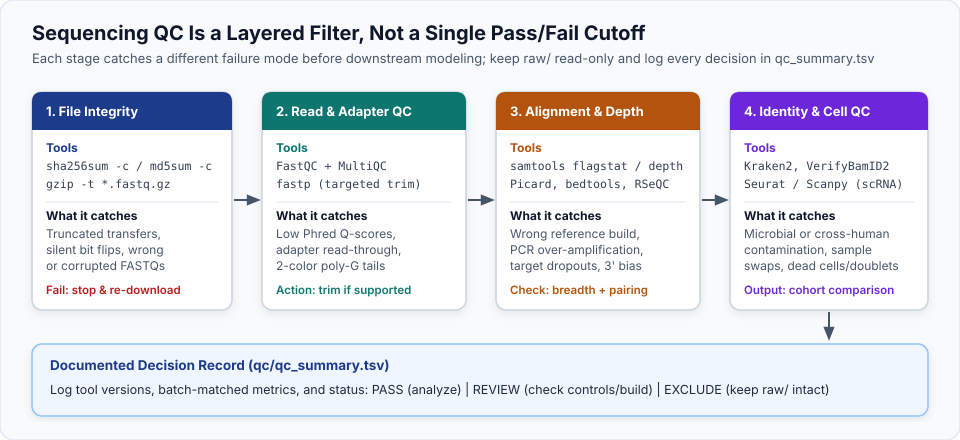
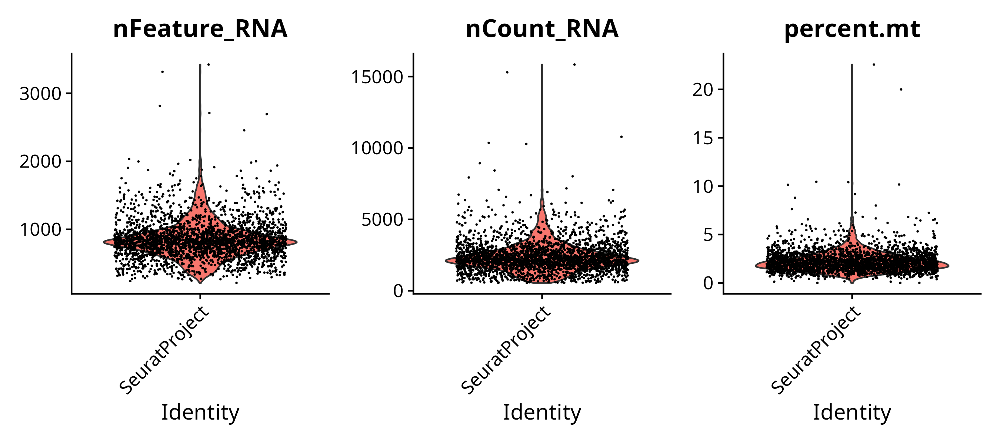

Quality Control Fundamentals
Nasir Mahmood Abbasi, PhD
Bioinformatics Educator
Sequencing quality control (QC) turns raw FASTQ files, alignment logs, and count tables into an auditable decision: which samples are ready for analysis, which need investigation, and why. Follow this layered workflow to catch file corruption, adapter read-through, wrong genome builds, cross-sample contamination, and damaged single cells before they distort downstream statistics.
Format: Conceptual guide. Compare sequencing QC signals across short-read and long-read assays, practice logging a sample-level review record, and bring your own FastQC/MultiQC reports to apply the same checklist.
What problem this solves: Downstream variant callers and differential-expression models assume your reads come from intact libraries, the right reference build, and the right biological donor. Without layered QC, a truncated download, 10% human cross-contamination, or a swapped sample sheet produces plausible-looking numbers that are biologically wrong.
What you will be able to do:
- Verify FASTQ file integrity with checksums and decompression tests before spending compute time.
- Read FastQC, MultiQC, and
fastpreports to decide when trimming helps and when a red flag is a normal protocol artifact. - Audit BAM alignments, duplicate rates, RNA-seq strandedness, coverage breadth, and contamination (
Kraken2,VerifyBamID2). - Evaluate single-cell RNA-seq covariates jointly in R (Seurat) or Python (Scanpy) and record reproducible
pass/review/excludedecisions inqc/qc_summary.tsv.
Prerequisites & time: About 35-45 minutes. Assumes basic shell navigation (Command Line Part 1) and familiarity with FASTQ, BAM, BED, and count-matrix formats (Introduction to Bioinformatics).
Scope: Pairs a standard short-read alignment template with locally verified checksum and samtools depth calculations plus an executed public PBMC3k Seurat check. Numeric cutoffs depend on assay, protocol, and matched controls; treat every threshold below as a starting point to calibrate against your own batch.
Start with the question QC must answer
QC reports measure technical properties of sequencing data; they do not prove a biological hypothesis. Poor base quality, residual adapters, uneven target capture, or cross-sample mixing distort allele frequencies and gene counts, whereas an unusual value can also reflect real biology or protocol design (for example, higher mitochondrial transcripts in cardiomyocytes than in lymphocytes).

Check quality across five complementary scales:
- Read level: per-base Phred quality scores, adapter read-through, GC content, and read-length distribution.
- Alignment level: mapped fraction, properly paired reads, mapping quality (MAPQ), and fragment insert-size distribution.
- Duplicate and coverage level: PCR vs. optical duplicates, library complexity, mean depth, and target coverage breadth.
- Sample identity level: cross-species reads, within-species human DNA mixing (
FREEMIX), sex concordance, and genotype swaps. - Single-cell level: detected genes and UMI counts per barcode, mitochondrial RNA fraction, ambient RNA, and doublets.
Paired-end short-read workflow
The shell stages below follow one paired-end sample stored under raw/ alongside a provider checksum manifest, writing logs to logs/ and QC reports to qc/. Create raw/, reference/, targets/, and logs/ in your project root and substitute your own sample names, reference FASTA, and installed tool environment. Save each stage as its own Bash script and run it with bash stage-name.sh. Every stage begins with set -euo pipefail so a failed command or pipe stops execution immediately instead of passing empty or partial files downstream.
Expected input files:
raw/sample_R1.fastq.gz,raw/sample_R2.fastq.gz: read-only raw paired-end FASTQ files.raw/checksums.txt(SHA-256) orraw/md5checksums.txt(MD5): the provider's original checksum manifest using paths relative toraw/(for examplesample_R1.fastq.gz). Keep the provider's manifest intact rather than overwriting it with locally computed hashes.reference/genome.faand matching aligner/FASTA indexes (for alignment and contamination stages).
1. Verify input files before analysis
Why: Network transfers can silently truncate a .fastq.gz file or swap files without raising an obvious shell error. Checksums verify that every byte matches the sequencing core's original file, while gzip -t verifies that the compressed archive stream decompresses cleanly from start to finish.
set -euo pipefail
# Input: provider manifest and FASTQ files beneath raw/
# Output: logs/checksum_validation.log
mkdir -p logs
if [[ -f raw/checksums.txt ]]; then
(cd raw && sha256sum -c checksums.txt) 2>&1 | tee logs/checksum_validation.log
elif [[ -f raw/md5checksums.txt ]]; then
(cd raw && md5sum -c md5checksums.txt) 2>&1 | tee logs/checksum_validation.log
else
echo "Missing provider SHA-256 or MD5 manifest; stop and obtain it." >&2
exit 1
fi
# Confirm each compressed FASTQ can be decompressed without error:
gzip -t raw/sample_R1.fastq.gz raw/sample_R2.fastq.gz
echo "Provider checksums and gzip integrity checks passed."
Expected output (verified locally on paired gzipped teaching FASTQs):
sample_R1.fastq.gz: OK
sample_R2.fastq.gz: OK
Provider checksums and gzip integrity checks passed.
If it fails: Any FAILED line from sha256sum -c/md5sum -c or an unexpected end of file error from gzip -t means the local copy is corrupt or mismatched. Re-download the affected file rather than editing the manifest.
2. Inspect read-level quality with FastQC and MultiQC
Why: Before aligning millions of reads, inspect base-calling accuracy, adapter carryover, and lane-level anomalies. A Phred quality score (Q) measures base-call error probability on a log scale: Q20 corresponds to a 1% error rate (99% accuracy) and Q30 to a 0.1% error rate (99.9% accuracy). FastQC inspects one FASTQ file at a time, while MultiQC aggregates all FastQC outputs across R1, R2, and samples into a single interactive report so outliers stand out immediately.
set -euo pipefail
# Input: raw/*.fastq.gz
# Outputs: qc/fastqc/ (HTML + raw), qc/multiqc_read_qc.html
mkdir -p qc/fastqc
fastqc -t 4 -o qc/fastqc raw/sample_R1.fastq.gz raw/sample_R2.fastq.gz
# Aggregate into one report
cd qc
multiqc -n multiqc_read_qc.html -o . fastqc
cd ..
Check & avoid false alarms: FastQC applies fixed generic thresholds that often trigger amber warnings or red crosses on healthy assay-specific libraries. Compare samples within the same batch instead of reacting to every red icon:
| FastQC module | Normal protocol artifact (do not panic) | True technical issue to investigate |
|---|---|---|
| Per base sequence quality | Mild 3' tail dip from Q36 to Q28 at cycle 150 | Median score drops below Q20 across half the read or in one failed lane/tile |
| Per base sequence content | Non-uniform composition in the first 10-12 bp of RNA-seq (random-hexamer priming bias) | Constant single-base spike or biased composition across the entire read length |
| Adapter content / Overrepresented sequences | <1-2% trace adapter at extreme 3' ends | Steep adapter climb from cycle 50 onward (short inserts) or adapter dimers |
| Sequence duplication levels | High duplication in bulk RNA-seq (highly expressed genes like ACTB) or amplicon panels | High duplication in low-depth WGS (<30x) paired with low library yield |
3. Trim only when the read report supports it
Why: Modern splice-aware and DNA aligners (bwa-mem2, STAR) soft-clip mismatched read ends automatically. Aggressive quality trimming can shorten reads below optimal mapping length or distort fragment-size estimates. Trim selectively when MultiQC shows substantial adapter read-through (from inserts shorter than the read length), two-color poly-G tails, or collapsed 3' base quality. Always write trimmed reads to trimmed/ and leave raw/ untouched.
set -euo pipefail
# Input: raw/*.fastq.gz
# Output: trimmed/sample_R1.trim.fastq.gz, trimmed/sample_R2.trim.fastq.gz
mkdir -p trimmed qc
fastp -i raw/sample_R1.fastq.gz -I raw/sample_R2.fastq.gz \
-o trimmed/sample_R1.trim.fastq.gz -O trimmed/sample_R2.trim.fastq.gz \
--detect_adapter_for_pe \
--thread 4 --html qc/fastp_report.html --json qc/fastp_report.json
Key fastp defaults to know: Out of the box, fastp performs adapter trimming plus quality filtering (dropping reads with >40% of bases below Q15, >5 N bases, or post-trim length <15 bp). Pass --disable_quality_filtering if you want adapter removal without read dropping. On two-color Illumina instruments (NextSeq and NovaSeq), dark cycles with no fluorescence signal are called as G, creating artificial high-Q poly-G tails; fastp enables poly-G trimming automatically when it detects two-color data, and --trim_poly_g forces it on for any run (use --disable_trim_poly_g to turn it off). Keep qc/fastp_report.json so MultiQC tracks exact pre- and post-trimming read counts.
4. Align, sort, mark duplicates, and inspect the BAM
Why: Read-level metrics cannot tell you whether reads actually come from your target organism or reference build. Aligning reads with bwa-mem2 (short-read DNA), STAR (bulk RNA-seq), or minimap2 (long reads) reveals mapping efficiency, fragment pairing, and library complexity. Always attach a SAM/BAM @RG read-group header specifying ID (lane/run), SM (biological sample), LB (library), and PL (platform) so duplicate marking separates physical libraries and downstream tools (GATK, VerifyBamID2) track sample provenance.
The indexing step writes companion files next to genome.fa and runs only once per reference and bwa-mem2 version (skip it if pre-built indexes exist; a plain FASTA .fai index alone is not a bwa-mem2 index).
set -euo pipefail
# Inputs: reference/genome.fa and trimmed/*.fastq.gz
# Outputs: indexed BAMs, flagstat/idxstats logs, duplicate metrics
mkdir -p aligned qc
bwa-mem2 index reference/genome.fa
bwa-mem2 mem -t 8 -R '@RG\tID:sample_L1\tSM:sample\tPL:ILLUMINA\tLB:lib1' \
reference/genome.fa \
trimmed/sample_R1.trim.fastq.gz trimmed/sample_R2.trim.fastq.gz \
| samtools view -b -o aligned/sample.unsorted.bam -
samtools sort -@ 4 -o aligned/sample.bam aligned/sample.unsorted.bam
samtools index aligned/sample.bam
# Alignment QC
samtools flagstat aligned/sample.bam 2>&1 | tee qc/alignment_flagstat.txt
samtools idxstats aligned/sample.bam 2>&1 | tee qc/alignment_idxstats.txt
# Mark duplicates (Picard)
picard MarkDuplicates I=aligned/sample.bam O=aligned/sample.dedup.bam \
M=qc/picard_markdup_metrics.txt CREATE_INDEX=true
Check these alignment outputs:
samtools flagstat: Verify total primary alignments match trimmed FASTQ read counts (note that secondary and supplementary split alignments appear as extra BAM records, so primary count is the accurate read tally). For matched human WGS/WES libraries, mapped % and properly paired % are typically high (>90-95%); a sharp drop points to contamination, adapter carryover, or a mismatched genome build.samtools idxstats: Lists mapped and unmapped read counts per contig (chr1,chrM, decoy contigs). Check that mitochondrial reads (chrM) and unplaced contigs are not absorbing a disproportionate share of the library, and comparechrX/chrYratios against reported sample sex.Picard MarkDuplicates(qc/picard_markdup_metrics.txt): InspectPERCENT_DUPLICATIONandESTIMATED_LIBRARY_SIZE. Marking duplicates is essential in DNA variant calling so PCR copies of one molecule do not fake heterozygous or somatic support. By contrast, for non-UMI bulk RNA-seq gene quantification, do not drop duplicates blindly: highly expressed genes (such asGAPDHorALB) naturally share identical 5' start positions. If you run PicardMarkDuplicateson RNA-seq for diagnostic inspection, Broad/GATK recommends settingREAD_NAME_REGEX=nullto skip DNA flowcell optical-duplicate modeling; if your library uses Unique Molecular Identifiers (UMIs), deduplicate with UMI-aware tools (umi_toolsorfgbio, or Picard--BARCODE_TAG) rather than coordinate-only marking.
4b. Bulk RNA-seq alignment and strandedness QC
If your assay is bulk RNA-seq aligned with STAR and quantified with featureCounts or Salmon rather than DNA alignment above, check these four RNA-specific diagnostics (all supported by MultiQC) before running differential expression:
STAR Log.final.out: InspectUniquely mapped reads %(often >75-85% for intact mammalian poly(A) libraries),% of reads mapped to multiple loci(spikes when rRNA depletion fails), and% of reads unmapped: too short(common with adapter dimers or degraded FFPE RNA).featureCounts .summary: CompareAssignedreads againstUnassigned_NoFeaturesandUnassigned_Ambiguity. If genomic mapping is >85% butAssignedcollapses to ~5-10% (or ~50%), the wrong strandedness flag or an unmatched GTF annotation release is the first suspect.- Library strandedness (
RSeQC infer_experiment.py): Runinfer_experiment.py -r genes.bed -i aligned/sample.bamto verify whether reads match an unstranded (~0.5 / 0.5), forward-stranded (1++,1--,2+-,2-+->featureCounts -s 1), or standard Illumina dUTP reverse-stranded (1+-,1-+,2++,2--> 0.90 ->featureCounts -s 2) library kit. - 3' transcript coverage bias and rRNA fraction (
Qualimap rnaseq/RSeQC geneBody_coverage.py): Pronounced 3' skew reflects RNA degradation (low RIN). If degradation differs systematically between cases and controls, downstream fold changes can confound biology with RNA integrity.
5. Measure coverage depth and target breadth
Why: Mean depth alone can hide severe target dropouts. A WES sample with 60x mean depth can still leave 10% of clinical exons below 10x coverage if capture hybridization was uneven. Measure both depth (reads per base) and breadth (fraction of target bases reaching your minimum usable depth, such as ≥10x or ≥20x), and verify what denominator your tool uses.
set -euo pipefail
# Input: aligned/sample.dedup.bam
# Output: qc/coverage_mean_depth.txt
mkdir -p qc
samtools depth -aa aligned/sample.dedup.bam | \
awk '{sum+=$3; cnt++} END {if (cnt>0) print sum/cnt; else exit 1}' \
> qc/coverage_mean_depth.txt
# Target breadth: fraction of each interval overlapped, not mean depth.
bedtools coverage -a targets/regions.bed -b aligned/sample.dedup.bam > qc/targets_coverage.tsv
Notice the denominator difference: samtools depth -aa outputs every reference base including contigs with no mapped reads, whereas -a omits unused contigs and can artificially inflate whole-genome mean depth. Also note that samtools depth excludes unmapped, secondary, QC-fail, and marked duplicate reads (DUP) by default (pass -g DUP only if you intentionally want duplicates included). For targeted panels or exomes, evaluate coverage over the capture BED rather than the whole genome: default bedtools coverage appends four columns (overlap count, covered bases, interval length, and fraction covered), so it reports covered bases and fraction rather than depth (it does not report mean depth unless you add -mean). For large cohorts, mosdepth computes whole-genome and BED-window coverage thresholds orders of magnitude faster than samtools depth.
Checked software example: with SAMtools 1.19.2, an artificial alignment of one 8-base teaching read to two 16-base contigs gives 0.5 mean depth with -a but 0.25 with -aa. The second contig has no reads; including its positions changes the denominator from 16 to 32. This tests the calculation, not biological coverage or a sample's suitability. Copied teaching files were also used to check checksum failure handling. Full alignment, contamination analysis, and other operating systems were not tested here.
6. Check contamination and sample identity
Why: Contamination and sample swaps happen in three distinct ways that require different detectors: (1) cross-species or microbial DNA (caught by taxonomic classification with Kraken2), (2) within-species DNA mixing such as 5% DNA from another human (caught by allele-balance mixture modeling via VerifyBamID2), and (3) complete sample swaps where a BAM is 100% pure DNA from the wrong patient (where FREEMIX stays near 0, so you must also check genotype concordance across matched samples with somalier or peddy and verify sex-chromosome depth).
set -euo pipefail
# Kraken2 taxonomic profile
# Input: trimmed sample FASTQ, kraken2 database path
# Output: qc/kraken2_report.txt
mkdir -p qc
kraken2 --db /path/to/kraken2_db --threads 4 --report qc/kraken2_report.txt \
--output - \
--paired trimmed/sample_R1.trim.fastq.gz trimmed/sample_R2.trim.fastq.gz
# VerifyBamID2: human BAM, matching reference FASTA and SVD resource panel.
# Replace the absolute panel prefix below; its .UD, .mu and .bed files must exist.
# Bioconda executable name: verifybamid2; source builds may use VerifyBamID.
samtools faidx reference/genome.fa
mkdir -p qc/verifybamid2
(
cd qc/verifybamid2
verifybamid2 --BamFile ../../aligned/sample.dedup.bam \
--Reference ../../reference/genome.fa \
--SVDPrefix /absolute/path/to/build_matched_panel_prefix \
> verifybamid2.log 2>&1
)
# Outputs: qc/verifybamid2/result.selfSM and result.Ancestry, plus the log.
Passing --output - (or /dev/null depending on your Kraken2 build) suppresses huge per-read stdout dumps while saving the clade summary to qc/kraken2_report.txt. For human BAMs, verifybamid2 replaces the legacy verifyBamID CLI and uses a genome-build-matched SVD resource panel (such as 1000 Genomes GRCh38/GRCh37) inside its own directory. Inspect FREEMIX in result.selfSM alongside cohort baselines: values ≤ 0.01 (1%) are generally clean, 0.01-0.03 warrant review (especially for low-VAF somatic calling), and > 0.03-0.05 commonly trigger exclusion in germline and somatic pipelines. Treat the block above as a documented template, not an executed contamination analysis.
7. Single-cell RNA-seq QC: evaluate covariates jointly
Why: In droplet single-cell RNA-seq (scRNA-seq), each barcode represents a droplet, not guaranteed single-cell biology. Three core covariates must be inspected together rather than one fixed cutoff at a time: detected genes (nFeature_RNA / n_genes_by_counts), total UMI counts (nCount_RNA / total_counts), and mitochondrial fraction (percent.mt / pct_counts_mt). Low counts + low genes + high mitochondrial percentage signal dying or ruptured cells whose cytoplasmic mRNA leaked out; very high counts + high genes signal potential doublets (two cells captured in one droplet); low genes despite moderate counts point to low-complexity cells (such as erythrocytes) or ambient-RNA-dominated droplets.
The R workflow below is the primary example reading a 10x Genomics Matrix Market directory (produced by Cell Ranger or STARsolo). Confirm organism gene-symbol casing before running: human mitochondrial symbols start with MT-, whereas mouse symbols typically start with mt-.
R workflow: Seurat QC metrics
# Input: a prepared 10x filtered_feature_bc_matrix/ directory
# Output: a Seurat object in memory and qc/seurat_qc_violin.png
library(Seurat)
library(ggplot2)
dir.create("qc", showWarnings = FALSE)
counts <- Read10X("data/filtered_feature_bc_matrix/")
seurat_obj <- CreateSeuratObject(counts = counts)
# Human gene-symbol convention only; adapt to species/annotation or omit.
mt_features <- grep("^MT-", rownames(seurat_obj), value = TRUE)
if (!length(mt_features)) stop("No features match ^MT-; adapt this pattern or omit the mitochondrial metric.")
seurat_obj[["percent.mt"]] <- PercentageFeatureSet(seurat_obj, features = mt_features)
qc_metrics <- seurat_obj[[]][, c("nFeature_RNA", "nCount_RNA", "percent.mt"), drop = FALSE]
print(summary(qc_metrics))
p <- VlnPlot(seurat_obj, features = c("nFeature_RNA", "nCount_RNA", "percent.mt"),
ncol = 3, pt.size = 0.1)
ggsave("qc/seurat_qc_violin.png", plot = p, width = 9, height = 4)
Python alternative: Scanpy QC metrics
# Input: the same prepared 10x filtered_feature_bc_matrix/ directory
# Output: qc/scanpy_qc_violin.png and printed per-cell summaries
import os
import scanpy as sc
import matplotlib.pyplot as plt
os.makedirs("qc", exist_ok=True)
adata = sc.read_10x_mtx("data/filtered_feature_bc_matrix/")
adata.var_names_make_unique()
# Human gene-symbol convention only; adapt to species/annotation or skip.
adata.var["mt"] = adata.var_names.str.startswith("MT-")
sc.pp.calculate_qc_metrics(adata, qc_vars=["mt"], inplace=True)
qc_columns = ["n_genes_by_counts", "total_counts", "pct_counts_mt"]
print(adata.obs[qc_columns].describe())
sc.pl.violin(adata, qc_columns, jitter=0.25, multi_panel=True, show=False)
plt.savefig("qc/scanpy_qc_violin.png", bbox_inches="tight")
plt.close()
Pair violins with bivariate scatterplots and data-driven thresholds: Violin plots show each metric alone, but decisions depend on their joint relationship (for example, FeatureScatter(seurat_obj, "nCount_RNA", "nFeature_RNA") and FeatureScatter(seurat_obj, "nCount_RNA", "percent.mt") in Seurat, or sc.pl.scatter in Scanpy). Following current single-cell best practices (Heumos et al., 2023), prefer per-sample or per-batch Median Absolute Deviation (MAD) outlier bounds (commonly 5 MADs on log-transformed counts/genes and 3 MADs on mitochondrial fraction) over copying a fixed 5% or 10% cutoff from another paper. Always inspect excluded cells by sample, batch, and preliminary cluster so filtering does not silently erase a metabolically active cell type (like cardiomyocytes) or low-RNA population (like neutrophils), and follow basic filtering with doublet detection (scDblFinder / Scrublet) and ambient-RNA checks covered in scRNA-seq Quality Control.
Interpret metrics by assay and context, not universal cutoffs
A metric that signals failure in one assay can be expected in another. Use the comparison below to separate platform-specific expectations from true quality problems:
| QC metric | Short-read WGS / WES | Bulk RNA-seq | Long-read (HiFi / ONT) |
|---|---|---|---|
| Read quality & length | Consistent Phred ≥Q30; uniform 100-150 bp | Q30 across body; random-hexamer 5' base bias normal | Inspect read-length N50 and histogram for short-fragment tails alongside per-read Q-score distributions |
| Mapping & pairing | High mapped and proper-pair rates; check MAPQ ≥20 | Check unique mapping, splice junctions, and rRNA multi-mappers | Check primary mapped yield and chimeric/split-read fraction against compatible chemistry |
| Duplicates | Mark and exclude PCR/optical duplicates before calling | Do not drop coordinate duplicates without UMIs | PCR-free long-read libraries typically have minimal PCR duplication |
| Coverage / Depth | Check per-target breadth (≥10x/20x) before reporting negative variants | Check 3' transcript bias (RIN) and strandedness (-s 0/1/2) | Inspect genome-wide breadth and N50-weighted coverage depth across target loci |
| Contamination / Identity | Kraken2 (cross-species) + VerifyBamID2 FREEMIX + somalier/peddy | Kraken2 + rRNA rate + sex-gene expression (XIST, RPS4Y1) | Kraken2 / read taxonomic screen + sample genotype concordance |
Note on long reads: neither read length N50 nor a single mean Q-score proves assembly contiguity or variant accuracy on its own. Always compare samples generated with the same sequencing chemistry and basecaller version, and consult platform-specific documentation before applying length or quality filters.
Troubleshooting: when a sample looks different
| Symptom | Likely technical or biological cause | First check & action |
|---|---|---|
| Low mapping rate (<70% in human DNA/RNA) | Wrong reference build, cross-species contamination, unremoved adapter dimers, or RNA reads aligned to a DNA pipeline | Verify reference FASTA/index; inspect FastQC adapter module; run Kraken2 on unmapped or raw reads |
| High duplicate fraction | Low input mass, excessive PCR cycles, narrow targeted panel, or missing UMI deduplication | Check library prep notes; enable UMI-aware deduplication if UMIs exist; do not drop non-UMI RNA-seq duplicates |
Low featureCounts Assigned % (<20%) with high genomic mapping | Wrong strandedness parameter (-s), pre-mRNA / intronic nuclei capture, or mismatched GTF build | Run RSeQC infer_experiment.py to confirm -s 0, 1, or 2; check intronic/intergenic read fractions |
High percent.mt in scRNA-seq | Cell lysis during dissociation, dead cells, or high-mitochondria tissue (heart, kidney, skeletal muscle) | Compare across batches and clusters; apply per-batch MAD bounds rather than one rigid global percentage |
Elevated FREEMIX (>0.03) or unexpected Kraken2 taxa | Cross-sample pipetting carry-over, index hopping, environmental microbe, or sample mix-up | Check negative controls and plate layout; pair with somalier/peddy genotype checks; exclude or re-sequence if compromised |
| Large QC shifts between batches | Different library kits, sequencers, operators, or tissue dissociation timing | Visualize QC covariates by batch; model batch covariates (Experimental Design & Batch Effects) or re-sequence key replicates |
Record decisions, protect raw data, and log qc_summary.tsv
Every QC review should leave behind two permanent guarantees: untouched source data and a machine-readable audit table explaining every inclusion or exclusion.
Before interpreting a flag: compare samples processed with the same assay and reference, verify the report's sample ID, and review negative controls and batch structure. A flagged metric is a prompt to investigate, not an automatic exclusion rule.
- Protect raw files: Keep originals read-only in
raw/(chmod -R a-w raw/) and never overwrite them with trimmed FASTQs. - Record exact provenance: Log tool versions (
fastp --version,samtools --version), reference assembly and annotation release (e.g., GRCh38 GENCODE v45, notingchr1vs.1naming and decoy contigs), and database build dates forKraken2. - Protect human data privacy: Human BAMs, genotypes, and sample sheets can be re-identifying. Enforce access controls before sharing MultiQC HTML reports or QC tables containing donor identifiers.
- Make missingness explicit: In
qc/qc_summary.tsv, write one row per sample and enterNAwhenever a metric was not measured rather than leaving blanks or assuming a pass.
sample tool_versions metrics decision evidence next_action
SYNTH_A fastp 0.23.2; samtools 1.17 reads=1,000,000; mapped=62%; proper_pairs=58%; mean_depth=18x review mapped fraction below matched-batch range (illustrative); controls pending verify reference build and inspect FastQC/MultiQC reports; reassess with controls
Notice the decision logic in that illustrative row: SYNTH_A is marked review rather than an immediate exclude because its 62% mapping rate falls below the matched batch range while controls and reference-build checks are still pending. Store the completed table at qc/qc_summary.tsv alongside the saved tool reports in qc/.
Practice exercise: triage three WES samples into pass, review, or exclude (click for solution)
Suppose three matched human whole-exome samples from the same sequencing batch report these metrics (batch median: mapped = 98.5%, 20x target breadth = 94%, FREEMIX = 0.004):
- Sample S1: mapped = 98.7%, duplicates = 14%, 20x breadth = 95%,
FREEMIX= 0.003,chrYdepth matches reported male sex. - Sample S2: mapped = 98.4%, duplicates = 15%, 20x breadth = 93%,
FREEMIX= 0.002,chrYdepth = 0x despite reported male sex. - Sample S3: mapped = 97.9%, duplicates = 18%, 20x breadth = 91%,
FREEMIX= 0.078 (7.8% estimated human DNA mixture).
Solution:
- S1 ->
pass: All metrics match the batch baseline and sex check agrees with metadata. - S2 ->
review(or hold from analysis): Read quality andFREEMIXlook clean, which is classic for a complete sample swap or metadata sex typo. Verify genotype concordance withsomalier/peddyand check the lab sample sheet before deciding whether to re-label or exclude. - S3 ->
exclude(or flag as severely contaminated): AFREEMIXof 0.078 exceeds standard 0.03-0.05 contamination limits and will introduce false-positive variant calls; keep raw FASTQs intact and request re-library/re-sequencing if needed.
What this run produced
This is the actual Seurat QC plot saved by the R example, using the official 10x Genomics PBMC3k filtered matrix. It is a public single-cell example, not the result of the FASTQ, alignment or bulk-QC templates on this page.

Run details and limits
The exact R block ran with R 4.3.3, Seurat 5.0.1, SeuratObject 5.0.1, Matrix 1.6.5, and ggplot2 3.4.4 on Linux. It read 32,738 features and all 2,700 supplied cells without additional sampling or filtering.
The documented human ^MT- feature pattern was found, the three metric summaries printed, and the PNG was saved. This checks only the prepared-input R component. Raw-read QC, bulk assays, other species, and the Python alternative were not executed by this run. Inspect the execution evidence.
References and official tool documentation
- Chen S, Zhou Y, Chen Y, Gu J (2018). fastp: an ultra-fast all-in-one FASTQ preprocessor. Bioinformatics, 34(17), i884-i890. doi:10.1093/bioinformatics/bty560
- Ewels P, Magnusson M, Lundin S, Käller M (2016). MultiQC: summarize analysis results for multiple tools and samples in a single report. Bioinformatics, 32(19), 3047-3048. doi:10.1093/bioinformatics/btw354
- Pedersen BS, Quinlan AR (2018). Mosdepth: quick coverage calculation for genomes and exomes. Bioinformatics, 34(5), 867-868. doi:10.1093/bioinformatics/btx699
- Wood DE, Lu J, Langmead B (2019). Improved metagenomic analysis with Kraken 2. Genome Biology, 20, 257. doi:10.1186/s13059-019-1891-0
- Zhang F, Flickinger M, Taliun SAG, et al. (2020). Ancestry-agnostic estimation of DNA sample contamination from sequence reads. Genome Research, 30(2), 185-194 (VerifyBamID2). doi:10.1101/gr.246934.118
- Heumos L, Schaar AC, Lance C, et al. (2023). Best practices for single-cell analysis across modalities. Nature Reviews Genetics, 24, 550-572. doi:10.1038/s41576-023-00586-w
- FastQC: Babraham Bioinformatics, MultiQC documentation, and fastp documentation
- SAMtools documentation, SAMtools depth denominator and filtering options, and bedtools coverage documentation
- VerifyBamID2 repository and Picard tools documentation
- GNU SHA checksum documentation, Seurat PercentageFeatureSet reference, and Scanpy QC metrics API
Next steps: Apply these QC principles directly in Whole Exome Sequencing (WES) Variant Calling, Transcriptomics Differential Expression, scRNA-seq Quality Control, or Experimental Design and Batch Effects.
The tool versions named in examples are illustrative, not an environment tested for this page. Capture versions from the tools actually used (for example, fastp --version, samtools --version, and fastqc --version) and record reference/database builds with the QC outputs. Re-check syntax against official documentation; report errors through the Contact page.
Author: Nasir Mahmood Abbasi, PhD - Category: Foundations & Prerequisites